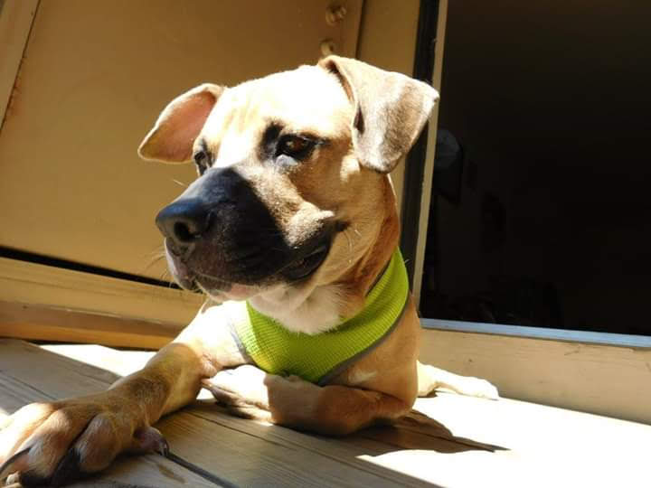
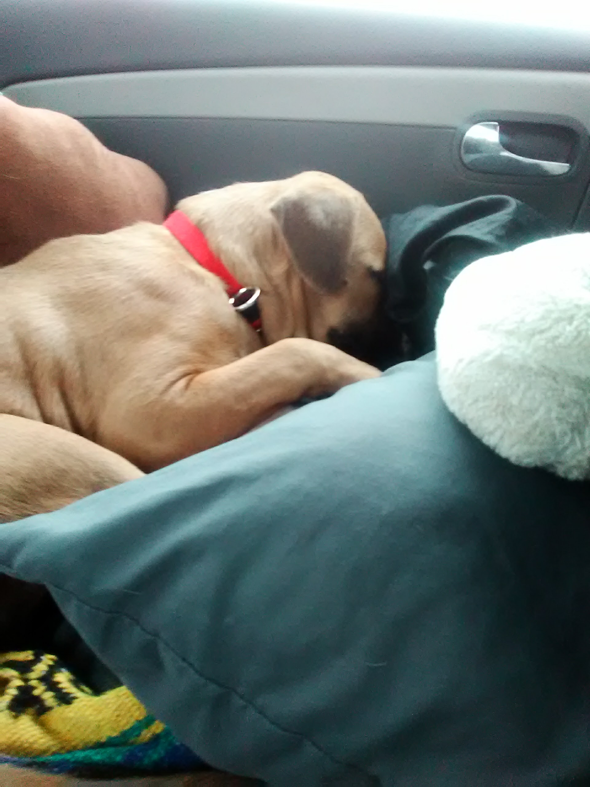

Max

Max is about 5 years old. I got him when he was 6 months old. We have been best friends ever since. Max is part Boxer and part Australian Shepherd, which means he is very smart, and very energetic. His favortite foods are bacon, chicken, carrots, and peanut butter. His favorite thing to do is go on car rides. He also enjoys throwing around his stuffed animals, getting love and attention from any and all humans, barking at other dogs, and cuddling. Max is really great with humans, but much like myself, he is not great with his own species. He is the best good boy!

Faster Than Light

I do not consider myself a 'gamer', however people have refered to me as such because of the amount of time I've spent playing Fast The Light. FTL is a very challanging real-time statagy rouge like game. The average player can expect to win < 10% of games. As they say: "losing is part of the fun!" In the game you are controling the crew of a spacecraft which is bringing vital information about how to defeat the xenophobic rebel faction to a federation fleet. The goal is to fight your way through 8 sectors, which may be friendly, nutural, or hostile, and get the information to the federation headquarters before the boss ship reaches them. There are 8 different alien species, each which have their own pros and cons

- Human
- Humans are useful becuase they are fast learners. Their stats will level up very quickly. However, unlike the other species, humans do not have any fun special abilities or special events in the game
- Engi
- Engis are a mostly mechanical species. They are very usful to have on your crew, as their repair speed is double that of other species. The downfall of the Engi is that they are weak and only inflict half the amount of damage as other species
Mantis
- Mantis are probably my favorite species to play.